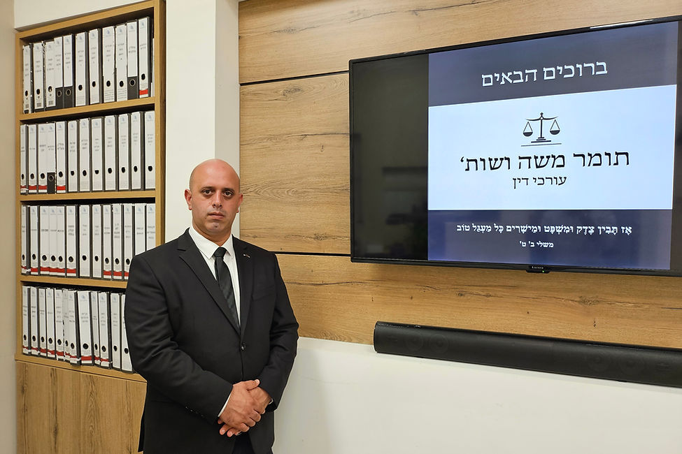

עסקאות מקרקעין
ליווי בעסקאות מכירה ורכישה של דירות יד שנייה, בדיקות משפטיות ותכנון ההיבטים הנלווים לעסקה.
משרד עורכי דין בפתח תקווה המעניק ליווי משפטי בתחומי המקרקעין, התחדשות עירונית, חדלות פירעון והוצאה לפועל.

ליווי משפטי ממוקד, המבוסס על בחינה פרטנית של כל עניין ובהתאם לצרכי הלקוח.
ליווי בעסקאות מכירה ורכישה של דירות יד שנייה, בדיקות משפטיות ותכנון ההיבטים הנלווים לעסקה.
בדיקת הסכמי רכישה, מועדי מסירה, שינויים, תשלומים והגנות משפטיות לרוכש.
בחינת היבטי המס בעסקאות רכישה ומכירה ותכנון מוקדם של העסקה.
עריכת הסכמים מותאמים למשכירים ולשוכרים, לרבות בטוחות, תשלומים, אחריות וסיום השכירות.
ליווי בעלי דירות בפרויקטים של חיזוק, הריסה ובנייה ופינוי-בינוי.
ייצוג חייבים וזוכים, הסדרת חובות, גבייה והליכים משפטיים רלוונטיים.
אָז תָּבִין צֶדֶק וּמִשְׁפָּט וּמֵישָׁרִים כָּל מַעְגַּל טוֹבמשלי ב', ט'
תומר משה ושות' מעניק שירות משפטי ללקוחות פרטיים ועסקיים, מתוך מטרה לייצר תמונת מצב ברורה לפני כל החלטה משפטית משמעותית.
העבודה מבוססת על בחינה יסודית של המסמכים, הצגת הסיכונים והאפשרויות, וליווי אישי לאורך ההליך.
תכנים כלליים שנועדו לסייע להבין נושאים משפטיים שכיחים. המידע אינו מהווה ייעוץ משפטי.
מה חשוב לבדוק לפני חתימה, אילו חיובים עשויים להתעורר ואיך לצמצם סיכונים בעסקה.
מועדי מסירה, שינויים, תשלומים והאותיות הקטנות שכדאי לבדוק.
הסכם שכירות צריך להתאים לנכס, לצדדים ולסיכונים הספציפיים.
לייעוץ ראשוני ותיאום פגישה ניתן לפנות בטלפון, בדוא״ל או באמצעות הטופס.